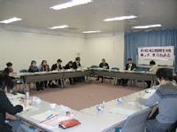

| ■報告事項（○は主な意見・質問） |
| １． |
第43回埼玉県消費者大会のまとめ(案)を提案し、確認されました。 |
| ２． |
団体別の大会参加者数(当日受付された人数)を報告しました。 |
| ３． |
第43回埼玉県消費者大会報告集について報告しました。 |
| ４． |
第44回埼玉県消費者大会(案)の日程・会場・体制を提案し確認されました。 |
| |
日程：2008年10月７日（火）
会場：埼玉会館大ホール・会議室
体制：実行委員長 埼玉県生協ネットワーク協議会
副実行委員長 埼玉母親大会連絡会 |
| ５． |
決算報告(見込み)を提案し、確認されました。 |
| ６． |
第43回埼玉県消費者大会の感想を出し合いました。 |
| |

| ＜主な感想＞ |
| ○ |
記念講演のピーターさんは、日本人より日本人らしい人だった。テンポがよく優しい話であったが、考えさせられることもあった。 |
| ○ |
参加者を増やすのは大変だが、とても良い話が聞けるので、次回は参加が増えるよう呼びかけたい｡ |
| ○ |
分科会助言者の話は、分かりやすかったし、もう少し聞きたかった。自分達の団体でもお呼びして学習会を開催したい。 |
|
| ７． |
午後から行われる埼玉県との懇談会の概要を説明しました。 |